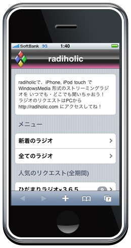
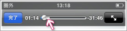

radiholicとは？
iPhone, iPod touch で WindowsMedia 形式のストリーミングラジオを 再生するWebサービスです。
本来、iPhone や iPod touch でネットラジオやポッドキャストなどの番組を聞く場合は、まずiTunesに登録し、同期させる必要があります。
しかし、この方法では登録した番組しか聞くことができず、外出先で不便な思いをします。
さらに、WindowsMedia 形式のネットラジオの場合、iTunesに取り込むことさえ大変です。
radiholicを使うと、あらかじめリクエストされているラジオであれば、iPhoneの3G回線と接続できる限り、いつでも、好きな番組を聞くことができるのです。
お出かけ前に、聞きたい番組をサッとリクエストして、出先でゆっくり聞く。ネットラジオ好きのための新しいスタイルです！
ラジオを聞くには
以下のアドレスを iPhone または iPod touch で開いてください。
- http://radiholic.com/
Safariの「＋ボタン」を使い、ブックマークかホーム画面に登録しておくと、すぐにアクセスできて大変便利です。
ラジオを選択できる画面になりますので、聞きたい番組をクリックして再生してください。
注意点
- Safari以外のアプリであれば、そのままラジオの再生が続行できます。（Safariで別のページを開くと再生は停止してしまいます）
- 本サービスは無料ですが、ラジオの再生には多くの通信が発生します。Softbankの3G回線を利用するプランをご利用の場合、本サービスの利用で月額使用料の上限まで達することが予想されますので、ご留意ください。気になる方は、無線LAN経由でご利用ください。
- 各ラジオはプロキシサーバのキャッシュと同様、一時的なものとなります。よって、予告無く再生ができなくなる可能性もございますので、ご了承ください。
リクエストするには
radiholicに新しいラジオ番組を追加するには、「リクエスト」が必要です。
PC版のトップページからリクエストが可能です。ネットラジオのリソースURLをコピペしてください。
- 試聴ページの「ラジオを聞く」などのリンク先のURLを そのまま貼り付けてください。
- URLの終わりが .asx .wax .wvx .asf .wma 形式のネットラジオに対応しています。
正しいリソースURLですと、ラジオの詳細登録画面に移動します。ここで ラジオのタイトル名 と トラック名 を入力してください。
- 便利な機能： ラジオ詳細情報推測機能 BETA
ラジオのリソースURLから、ラジオのタイトル名 と トラック名 を推測して、ピンク色の候補として表示します。
この候補を利用すると、トラック名 等をコピペする手間が省けます。
全ての項目を入力し終わったら「登録」ボタンをクリックしてください。
- 登録処理には時間がかかります。
- 登録処理が終わると、新着 または カテゴリ に追加されます。iPhone, iPod touch で http://radiholic.com/ をご覧ください。
- 登録処理できない場合もありますので、ご了承ください。
- ラジオ詳細情報の入力を間違ってしまった場合は、取り消せません。その際は下記メールアドレス宛に修正依頼メールを送信してください。
よく寄せられる質問
radiholicのラジオをiTunes等にダウンロードできますか？
いいえ、できません。radiholicはあくまでもiPhoneなどダウンロード機能のない端末向けに疑似ストリーミングで再生することを目的としています。よって、radiholicに登録されているラジオをiTunesやMac, iPhoneに保存することはできません。
iPod classic や iPod nano、その他ポータブルプレイヤーから利用できますか？
いいえ、できません。radiholicは通信機能のあるApple社製 iPhoneまたはiPod touchのみ対応しています。
ポッドキャストには対応していますか？
すでにiTunesで対応しているので、本サービスでは対応していません。ここで言うポッドキャストとは、MP3ファイルをRSSなどのXMLで配信する形式、となります。
ラジオによっては、スクリーンショットが表示されませんが？
ネットラジオによっては、配信元のサイトをうまく特定できず、スクリーンショットが正しく表示できないことがあります。
地下鉄など電波がよく途切れる場所で利用できますか？
ラジオの再生を始めると白いバーが伸び始めます。これは、ラジオをiPhoneに一時的にキャッシュしていることを表しており、このバーの範囲内なら圏外でも再生が続けられます。ですので、地下鉄のホーム等、電波状況の良い場所である程度キャッシュさせておくと、途切れず再生することができるようです。
リクエストされているラジオを削除したいのですが？
リクエストはシステム上のキャッシュとして存在しており、登録も任意のクライアントから受け付けているため、基本的に手動による削除は行っていません。ただ、理由によっては検討させていただきますので、お手持ちのiPhoneまたはiPod touchで当該のラジオを視聴し問題点を確認した上で、報告フォームの該当項目に記入し報告してください。
広告を載せたいのですが？
ネットラジオ関係の関連商品（ラジオCDや出演者の作品等）については、希望がありましたらリンク等にて無料で広告させていただきます。下記メールアドレスまでお問い合わせください。
radiholicとはどういう意味ですか？
radio + holic で「ラジオ中毒者」を表す勝手に作った造語です。ネットラジオを身近にして、もっともっとメジャーになって欲しい！という願いを込めてます。
[ トップに戻る ]